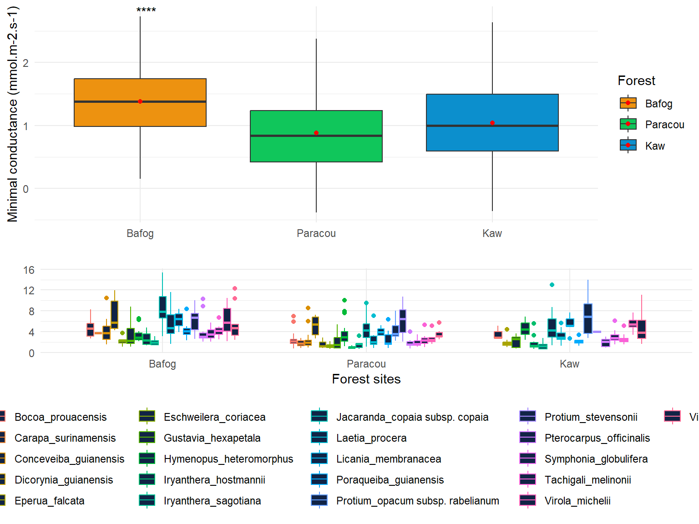
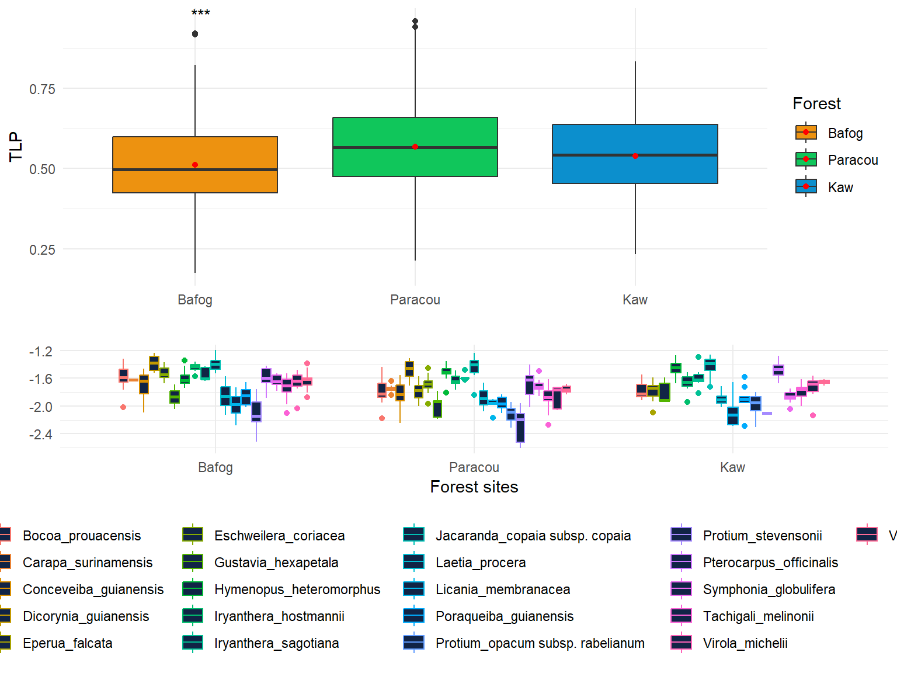

Chapter 6 Results
6.1 Distribution of major traits
A focus on the frequency distribution of traits of individuals within communities allows scaling up from organism to ecosystem level and assessing how ecological communities and ecosystems respond to climate drivers (Garnier et al 2016; Liu et al 2020).
The shape of trait distribution could have the potential to reveal the ecological significance of trends and tradeoffs in traits at the species level. A focus on the mean and the variance of the community trait distribution is rooted in the concept of phenotype-environment matching and environmental optimality, where species’ relative abundance is mediated by their traits, that is, “community assembly by trait selection”. To understand how community trait composition is affected by ecological processes.
- use of community-weighted trait metrics CWM
- variance
- mean
- skewness (symmetry)
- kurtosis (measure of tailness with heavy tail referring to outliers)
Metradica <- read.csv("C://Users/marion.boisseaux/Dropbox/Mon PC (Jaboty20)/Documents/METRADICA/METRADICAproject/Dataset/OUTPUT_cleaning/ALL/Final_Metradica_OUT_30112022.csv")
sub_data_TF <- Metradica %>%
filter(Name %in% c("Dicorynia_guianensis", "Iryanthera_sagotiana", "Gustavia_hexapetala", "Licania_membranacea", "Poraqueiba_guianensis", "Virola_michelii")) %>% filter(Habitat == "TF")
sub_data_SF <- Metradica %>%
filter(Name %in% c("Eschweilera_coriacea","Eperua_falcata", "Iryanthera_hostmannii", "Laetia_procera", "Protium_opacum subsp. rabelianum", "Pterocarpus_officinalis", "Symphonia_globulifera", "Virola_surinamensis", "Carapa_surinamensis")) %>% filter(Habitat == "BF")
sub_data_G <- Metradica %>%
filter(Name %in% c("Bocoa_prouacensis", "Conceveiba_guianensis", "Jacaranda_copaia subsp. copaia", "Hymenopus_heteromorphus", "Protium_stevensonii", "Tachigali_melinonii"))
sub_data <- bind_rows(sub_data_TF, sub_data_SF, sub_data_G)
sub_data <- sub_data %>% mutate(Type= ifelse(Name == 'Virola_michelii','TF',Type))
sub_data <- sub_data %>% mutate(Type= ifelse(Name == 'Eschweilera_coriacea','BF',Type))
Metradica <- sub_data #552 indv
Subdata_shapiro <- slice_sample(Metradica, n=30) # Shapiro test is used for small sample size (n=30)6.1.1 Water traits

## [1] "Data is normal"
## [1] "Data is normal"
## [1] "data is not normal"
## [1] "Data is normal"The πtlp values in our data set were on average less negative than those previously reported in the literature (for moist tropical forests (Fig. 1) (Maréchaux 2015). There are several possible explanations for such a pattern, one of them being that as they conducted their measurements at the peak of the dry season, we also measured πtlp at the peak of the dry season, but 2020-2021 dry seasons were “wetter” than usual. Plants often acclimate πtlp during drought periods, through the accumulation of cell solutes, or osmotic adjustment. Such an adjustment results in a lowering of πtlp and can contribute to drought tolerance in vegetation world-wide (Wright et al. 1992; Abrams & Kubiske 1994; Cao 2000; Merchant et al. 2007; Zhu & Cao 2009; Bartlett, Scoffoni & Sack 2012b; Bartlett et al. 2014).
###Vein traits

## [1] "Data is normal"
## [1] "Data is normal"
## [1] "Data is normal"
## [1] "Data is normal"


6.2 Gmin
The capacity to retain water will become increasingly important for survival of tropical trees. Along with other plant hydraulic traits, cuticle conductance may strongly affect survival during droughts (Cochard, 2020).

interpretation Across all species and all sites, gmin averaged 4.02 mmol.m-2.s-1. Gmin varied significantly among species (F-statistic: 18.10326, p-value: < 2.2204e-16). Across sites, gmin ranged from 3.08 mmol m–2 s–1 in Paracou to 3.60 mmol m–2 s–1 in Kaw to 5.47 mmol.m-2.m-1 i Bafog and site differences were significant (F-statistic: 50.0139, p-value: < 2.2204e-16).
It is unclear whether a higher gmin in the Bafog site is assigned to stomatal opening or a higher permeability of the cuticle. We may need to consider soil water access as an additional factor to understand the pattern.
literature Slot et al 2021 found across 24 tropical species an average gmin of 4.0 mmol m–2 s–1. Large differences among species in cuticular water loss have the potential to contribute to differential mortality during drought, phenomena that are increasingly common in the tropics (Rifai et al 2019)
- compare with stomatal density
- see if more trichomes for bafog site that could explain why these species can afford to have a higher gmin?
6.3 LSWC
One of the direct results of the regulation of stomatal movement is the reduction of water loss through transpiration by adjusting the leaf stomatal conductance, to achieve a high water-use efficiency and prevent embolism, which is called isohydric behavior. In contrast, the leaf stomatal conductance is kept at a relatively high level to maintain efficiently photosynthesis, which is known as anisohydric behavior (Roman et al., 2015). Therefore, LSWC reflect the plant’s response to drought. (Zhou et al 2021)


6.4 TLP

Leaf turgor loss point (πtlp) indicates the capacity of a plant to maintain cell turgor pressure during dehydration, which has been proven to be strongly predictive of the plant response to drought.
The variability in πtlp among species indicates the potential for a range of species responses to drought within Amazonian forest communities.
For Symphonia globulifera we couldn’t exclude first- and second-order veins (that may have resulted in apoplastic dilution that would lead to less negative osmometer values (Kikuta & Richter 1992)). Eventhough it does not appear to be an outlier, we still have too keep in mind that the overall values would be more negative.
We found lower TLP values (less negative) for 7 species (above - 1.6 MPa):
- Dicorynia guianensis (as Maréchaux et al 2015)
- Eschweleira coriacea (as Maréchaux et al 2015)
- Hymenopus heteromorphus
- Iryanthera sagotiana
- Iryanthera hostmannii
- Jacaranda copaia subsp. copaia
- Pterocarpus officinalis
We found higher TLP values (more negative) for 10 species (below - 1.87 MPa) including Voucapoua americana and both Protium species like Maréchaux et al 2015. Protium species have been found in more seasonally dry forests across the Amazonia (Ter Steege et al 2006).
Litterature * The paper by Zhu et al. (2018) in this issue of Tree Physiology provides a meta-analysis of TLP and its relationship to a range of hydraulic traits linked to drought tolerance, as well as to leaf economic traits, across an impressive 389 species (of which, data for 240 are published for the first time) from nine major forest types in China.
*adjustments in leaf structure in response to seasonal water deficit (Niinemets 2001, Mitchell et al. 2008) and altered nutrient concentrations (Villagra et al. 2013) drive changes in leaf water relations traits, including TLP. Blackman 2018
*This plant functional trait represents the leaf water potential that induces wilting. Leaves with a more negative πtlp (measured in MPa) remain turgid at more negative water potentials and tend to maintain critical processes, such as leaf hydraulic conductance, stomatal conductance and photosynthetic gas exchange, under drier conditions (Cheung, Tyree & Dainty 1975; Abrams, Kubiske & Steiner 1990; Brodribb et al. 2003; Bartlett, Scoffoni & Sack 2012b; Guyot, Scoffoni & Sack 2012). Thus, a more negative value for πtlp contributes to greater leaf-level drought tolerance and therefore also plant-level drought tolerance.